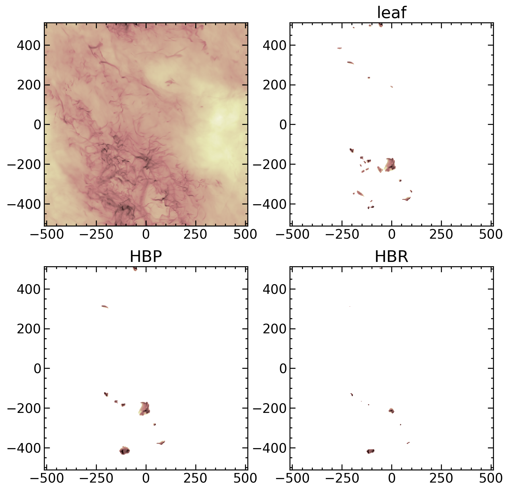

Usage#
>>> import matplotlib.pyplot as plt
>>> from matplotlib.colors import LogNorm
>>> import pyathena as pa
>>> from grid_dendro import dendrogram, energy
>>>
>>> # Read data
>>> basedir = "/tigress/sm69/public_html/files/grid_dendro_example_data/R8_2pc_rst"
>>> ds = pa.read_vtk(f"{basedir}/R8_2pc_rst.0390.vtk")
>>> ds_grav_pp = pa.read_vtk(f"{basedir}/R8_2pc_rst.0390.Phi.vtk")
>>> dat = ds.get_field(['density', 'velocity', 'pressure', 'cell_centered_B'])
>>> dat['gravitational_potential'] = ds_grav_pp.get_field('Phi').Phi
>>> dat['magnetic_pressure'] = 0.5*(dat.cell_centered_B1**2
>>> + dat.cell_centered_B2**2
>>> + dat.cell_centered_B3**2)
>>> dat = dat.drop(['cell_centered_B1', 'cell_centered_B2', 'cell_centered_B3'])
>>>
>>> # Construct dendrogram and prune
>>> gd = dendrogram.Dendrogram(dat.gravitational_potential.data)
>>> gd.construct() # Construct dendrogram
>>> gd.prune(ncells_min=27) # Remove buds by applying minimum cell criterion
>>>
>>> # Find HBP and HBR
>>> data = dict(rho=dat.density.data.flatten(),
>>> vel1=dat.velocity1.data.flatten(),
>>> vel2=dat.velocity2.data.flatten(),
>>> vel3=dat.velocity3.data.flatten(),
>>> bprs=dat.magnetic_pressure.data.flatten(),
>>> prs=dat.pressure.data.flatten(),
>>> phi=dat.gravitational_potential.data.flatten())
>>> hbp, hbr = energy.find_bound_objects(gd, data)
>>>
>>> # Plot results
>>> fig, axs = plt.subplots(2, 2, figsize=(10,10))
>>> norm = LogNorm(1e-1, 1e2)
>>> dim = 'z'
>>> dz = ds.domain['dx'][2]
>>>
>>> (dat.density*u.Msun).sum(dim=dim).plot.imshow(ax=axs[0,0], norm=norm, cmap='pink_r',
>>> add_colorbar=False, add_labels=False)
>>>
>>> rho = gd.filter_data(dat.density, gd.leaves)
>>> (rho*dz*u.Msun).sum(dim=dim).plot.imshow(ax=axs[0,1], norm=norm, cmap='pink_r',
>>> add_colorbar=False, add_labels=False)
>>> axs[0,1].set_title("leaf")
>>>
>>> rho = dendrogram.filter_by_dict(dat.density, hbp)
>>> (rho*dz*u.Msun).sum(dim=dim).plot.imshow(ax=axs[1,0], norm=norm, cmap='pink_r',
>>> add_colorbar=False, add_labels=False)
>>> axs[1,0].set_title("HBP")
>>>
>>> rho = dendrogram.filter_by_dict(dat.density, hbr)
>>> (rho*dz*u.Msun).sum(dim=dim).plot.imshow(ax=axs[1,1], norm=norm, cmap='pink_r',
>>> add_colorbar=False, add_labels=False)
>>> axs[1,1].set_title("HBR")
>>> for ax in axs.flat:
>>> ax.set_aspect('equal')
